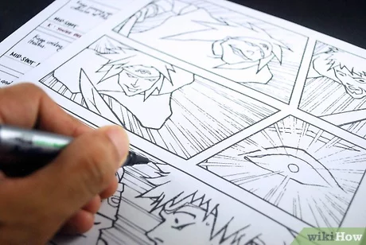
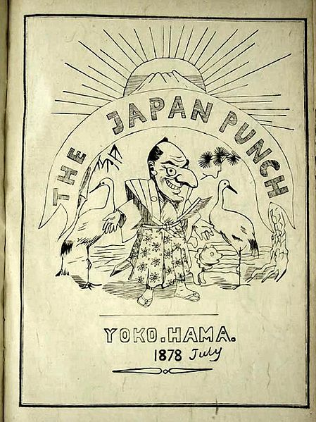
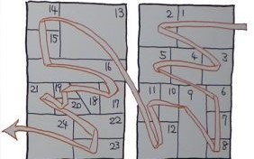
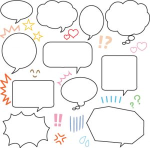

Manga

Manga (漫画) are original Japanese comic books that have a solid niche of followers from all around the
world. Japanese manga creators conform to a particular style of artwork creation developed in the late
19th century. The story lines of the comic books tackle a broad range of genres such as action,
-adventure romance, comedy, drama, science-fiction, and fantasy.Manga plays a large part in the
Japanese publishing industry and isn’t showing any signs of slowing down.

The Japanese term manga refers to cartooning and comics or whimsical sketches Outside Japan, manga
can mean, simply, comic books published in Japan. The origin of manga may date back all the way to
12th century scrolls. But many dispute this because of the right-to-left reading style of manga
comic books.Modern manga as we now know it has been historically and culturally influenced by two
factors—pre-War (Meiji and pre-Meiji) Japanese culture and arts, and the events following WWII..
The very first manga magazine, Eshinbun Nipponchi, was published in 1874 by Kanagaki Robun and
Kawanabe Kyosai. It was likely influenced by the pioneering Japanese magazine The Japan Punch, which
was published between 1862 and Charles Wirgman. Eshinbun Nipponchi did not have initial success and
was discontinued after only three issues. This was followed by Kisho Shimbun in 1875, spring 1887 by Marumaru Chinbun in 1877, and Garakuta Chinpo in 1879.

The pre-War manga works are a mixture of elements, especially words and images. The words were
synonymous to the social and economic needs of pre-War Japan and Japanese nationalist, while
the images were largely associated with Chinese graphic art. After WWII, manga was shaped
by U.S. culture derived from television, film, cartoons, and comic books.
How to read Manga

Traditionally, manga stories are read from right to left and from top to bottom, in the same
way as Japanese writing. The narrative is contained within frames called koma. So, to read a
page of manga, you start with the koma in the top right-hand corner and you end with the
koma in the bottom left-hand corner.The elements that are used to build up a manga story
include manpu, fukidashi and gitaigo.
Manpu
Manpu refers to manga symbols. They are frequently used to express movement or emotions,
with stock symbols used to convey feelings such as sadness or anger; embarrassment or
tiredness. When these stock representations become instantly recognisable to regular
readers of manga, it means that excessively prolix text becomes superfluous!

Fukidashi
Fukidashi are the speech bubbles, which give manga characters their voice.
The shape of the fukidashi reflects the mood of the message being conveyed. Solid, rounded
fukidashi represent normal speech, whereas more cloudlike fukidashi express happiness
and more spiky-shaped fukidashi surprise or tension.
Gitaigo
Gitaigo, Giongo and Giseigo are the ways that manga illustrates sound effects and feelings in
a story.The Japanese language has more than three times the number of onomatopoeic words
compared to the English language, which gives manga stories ample scope for expressive sound
-words. In fact, there are so many gitaigo, it’s enough to make anyone ぐるぐる (dizzy)!
A multi-faceted reading experience
Manga is often referred to as multimodel. In other words, there’s a lot going on. Reading manga requires the ability to interpret symbols, decipher overlapping
text and images, understand cultural references and appreciate differences in storytelling between countries.
But, above all else, manga is meant to be entertaining.